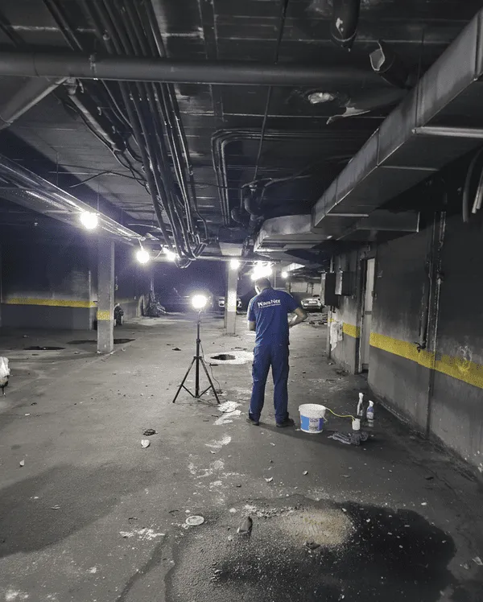

En Murcia, la arquitectura es barroca porque fue capital del Obispado, y el sol meridional la ha cocinado durante cuatrocientos años. Las fachadas tienen cornisas complicadas donde el polvo se atasca, las paredes absorben calor durante el día y lo liberan de noche, y los materiales que tocas en verano están demasiado calientes para la mano. Cuando arde una cocina, el humo tiene un enemigo: el calor seco lo fija más rápido que en ciudades húmedas. En Madrid llueve, la humedad disuelve partículas, y el olor se difunde. En Murcia, el aire seco es como un secador industrial: fija el humo, concentra el olor, y lo preserva. El tiempo es crítico aquí más que en cualquier otra ciudad.
Pero Murcia también es la puerta a la costa. La ciudad está a cien kilómetros del mar, y eso significa que hay tráfico de residencias secundarias, gente que llega desde Alicante o Almería, empresas familiares que funcionan en pisos de vivienda con anexo de oficina. Un incendio en una vivienda familiar de Murcia no es solo un desastre personal: es que la persona tenía planes, venía mucha gente en agosto, y la casa no está lista. O una pequeña empresa se quema y la dueña está desesperada porque necesita abrir el próximo lunes. En Murcia, la urgencia es económica y personal: la gente vive del turismo, del comercio de proximidad, de planes estacionales. Nosotros entiendemos eso. Por eso nuestro tiempo de respuesta aquí es aún más crítico.

Particularidades de Murcia: clima seco, arquitectura barroca, degradación acelerada
Murcia es la ciudad más seca de España por donde pasa agua. El río Segura que cruza Murcia trae agua, pero la atmósfera es desértica: lluvia muy pocas veces, humedad relativa baja incluso en invierno, y en verano es un horno. Eso significa que cuando hay un incendio, el humo no se disuelve en aire húmedo como en norte de España: se fija directamente en las superficies. La arenisca barroca se vuelve porosa durante el incendio (el calor la dilata), y luego el aire seco la contrae rápidamente sellando el hollín adentro. Un incendio en Murcia es arqueología: el hollín está fossilizado en la piedra después de veinticuatro horas si no lo limpias.
La arquitectura barroca murciana tiene un problema estructural para la limpieza: detalles. Cornisas complicadas, molduras de decoración, capiteles de columnas, superficies que no son rectas. El hollín se mete en esos detalles y es difícil de extraer sin daño. La presión alta destroza el barroco; la presión baja tarda días. Aquí necesitas técnica, paciencia, y especialización. Además, muchos edificios barrocos tienen fachadas de cerámica vidriada (azulejos históricos), y el hollín se adhiere a la vidriada como imán. No sale con agua normal.
El calor acelera todo lo malo. Si hay una vivienda con humo y no la limpias en tres días, el calor extremo causa que: metales oxidados pasen de óxido simple a óxido profundo, textiles pierdan color de forma irreversible, y pintura se agriete. Es degradación acelerada. En Murcia, cada día de retraso es un porcentaje de pérdida. Eso es diferente a Madrid donde la degradación es lenta; en Murcia es exponencial.
Errores comunes en Murcia tras incendio
El error número uno es esperar que el olor se vaya con el tiempo. En Murcia, el olor no se va: se fija. Si dejas pasar una semana sin limpiar, el hollín microscópico se habrá enquistado en telas, muebles, y paredes de forma que ya no sale con limpiezas normales. Después hay que hacer desodorización industrial, que es más caro y lleva más tiempo. Limpiar rápido en Murcia es no solo urgencia: es ahorro.
El error número dos es usar agua de grifo en cerámica vidriada histórica. El agua de Murcia es calcárea (viene del Segura cargada de minerales), y si limpias cerámica histórica con presión, dejas marcas blancas de cal que no se van. Necesitas agua destilada, baja presión, y técnica específica. Algunos "limpiadoras" de Murcia usan agua fuerte de grifo y arruinan el detalle barroco.
El error número tres es pensar que el seguro cubre todo rápido. Los seguros en Murcia, con tantas reclamaciones por clima, son lentos. Si esperas el dinero del seguro, pasarán dos meses, el humo habrá causado degradación total, y el mueble que podía salvarse ya no. Haz la limpieza urgente ahora, guarda fotos, documenta todo, y el seguro te reembolsa después. Pero la urgencia es primero.
Protocolo de respuesta urgente: intervención en menos de 24 horas
- Respuesta urgentísima en clima seco. Llamáis a las 15 horas, estamos allí a las 20. El tiempo es crítico en Murcia porque el calor fija todo rápido.
- Evaluación de degradación acelerada. Analizamos qué está ya comprometido por calor (metales, pintura, textiles) y lo priorizamos. Lo que se puede salvar se salva primero.
- Limpieza con agua tratada (destilada o baja dureza). En cerámica histórica, usamos agua que no deje cal. No usamos agua de grifo que arruinaría los detalles barrocos.
- Técnica baja presión en arquitectura barroca. Limpiamos cornisas, molduras, detalles con esponja y cepillo, no con presión. Es manual pero respeta la arquitectura.
- Desodorización intensiva con ozono. En clima seco, el ozono funciona aún mejor porque no hay humedad que lo disuelva. Generamos ozono fuerte, lo dejamos actuar en ciclos, y erradicamos el olor enquistado.
- Control de materiales degradables. Textiles, muebles de madera, pintura: los monitoreamos para evitar que el calor siga degradando mientras limpiamos. Usamos deshumificadores si es necesario.
- Documentación rápida para el seguro. Fotos de todo, informe técnico detallado, certificación de limpieza. Lo envíamos el mismo día para que empieces el proceso de reembolso cuanto antes.
Precios orientativos de limpieza post incendio en Murcia
| Tipo de intervención | Plazo estimado | Precio orientativo |
|---|---|---|
| Habitación / estancia afectada | 1 día | desde 350 € |
| Vivienda media (75-95 m²) | 2-3 días | 1.100 € - 2.800 € |
| Vivienda grande / chalet | 3-5 días | 2.800 € - 6.500 € |
| Local, comercio o nave | según superficie | presupuesto a medida |
*Precios orientativos. El presupuesto final depende de superficie, nivel de hollín, materiales, y grado de degradación acelerada. La valoración es gratuita.
Respuesta de emergencia 24h: qué hacemos ante incendios
Sí hacemos:
- Limpieza y descontaminación de hollín, humo y olores
- Tratamiento de cerámica vidriada y arquitectura barroca
- Control de degradación acelerada por calor
- Informe urgente para aseguradora
No hacemos: obras, reformas, pintura ni restauración estructural. Nos centramos en limpieza y descontaminación urgente.
La gente también pregunta sobre la limpieza de incendios en Murcia
¿Es verdad que el olor en Murcia es más fuerte que en otros sitios?
Sí. El clima seco fija el humo más rápido y lo concentra. Un incendio igual en Madrid y Murcia dejará un olor más persistente en Murcia porque el aire no disuelve partículas, las adhiere. Por eso la limpieza aquí debe ser más agresiva (más ozono, más desodorización).
¿Se puede salvar la pintura en un piso tras incendio en Murcia?
Depende del tiempo. Si limpias en 24 horas, sí. Si esperas una semana, el calor extremo habrá agrietado la pintura y oxidado sustratos metálicos. En Murcia, la ventana de salvación es muy corta. Por eso tiene que ser urgente.
¿Cómo se limpia cerámica histórica barroca sin dejar manchas de cal?
No usamos agua de grifo (tiene demasiada cal). Usamos agua destilada o desmineralizada, baja presión, y esponja manual. Es lento pero es la única forma de no dejar marcas blancas que serían peor que el hollín.